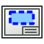
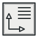

BIM Workbench/it
Questa pagina è stata aggiornata per quella versione.

Introduzione
L' Ambiente BIM fornisce un moderno flusso di lavoro Building Information Modeling in FreeCAD, con oggetti completamente parametrici come come muri, travi, tetti, finestre, scale, tubi e mobili. Supporta file Industry Foundation Classes (IFC) e la produzione di disegni progettuali 2D in combinazione con
Ambiente BIM fornisce un moderno flusso di lavoro Building Information Modeling in FreeCAD, con oggetti completamente parametrici come come muri, travi, tetti, finestre, scale, tubi e mobili. Supporta file Industry Foundation Classes (IFC) e la produzione di disegni progettuali 2D in combinazione con  l'Ambiente TechDraw.
l'Ambiente TechDraw.
L'ambiente BIM importa strumenti da  Draft, poiché utilizza i suoi oggetti 2D per costruire oggetti parametrici 3D. Ma può anche utilizzare forme solide create con altri ambienti di lavoro come
Draft, poiché utilizza i suoi oggetti 2D per costruire oggetti parametrici 3D. Ma può anche utilizzare forme solide create con altri ambienti di lavoro come  Part e
Part e  PartDesign.
PartDesign.
Vedere FreeCAD BIM migration guide per una rapida panoramica se si è già utente di un'altra applicazione BIM.
Gli sviluppatori di Draft e BIM collaborano anche con la più ampia comunità OSArch, con l'obiettivo finale di migliorare la progettazione degli edifici utilizzando software completamente gratuito.

Per iniziare

Al primo avvio di BIM viene visualizzata una finestra di benvenuto, che fornisce una rapida panoramica di come funziona questo ambiente e consente all'utente di avviare un divertente tutorial di BIM. La finestra di benvenuto è disponibile anche dal menu Aiuto. Quando la schermata di benvenuto viene chiusa facendo clic su OK, viene visualizzata la finestra di dialogo di configurazione BIM, che consente all'utente di impostare rapidamente alcune delle più comuni preferenze relative al BIM di FreeCAD senza la necessità di sfogliare tutte le pagine delle Preferenze di FreeCAD.
Lo strumento Configurazione del progetto BIM consente di configurare rapidamente un progetto BIM inserendo alcune informazioni di base sul progetto. È quindi possibile, ad esempio, utilizzare i diversi strumenti di disegno 2D per tracciare linee guida e linee di base, quindi utilizzare i diversi strumenti di modellazione 3D per creare automaticamente gli oggetti BIM 3D. Una linea, ad esempio, può diventare un muro semplicemente selezionandola e premendo il pulsante Muro.
Elementi di costruzione comuni come muri o colonne possono essere facilmente creati premendo il pulsante appropriato della barra degli strumenti e facendo clic sui punti nella vista 3D. Possono essere spostati, ruotati e modificati una volta creati. La maggior parte degli elementi BIM vengono creati sul piano di lavoro corrente, quindi un flusso di lavoro tipico prevede prima il posizionamento del piano di lavoro, quindi la creazione di un elemento BIM. È possibile creare elementi più complessi disegnando prima gli elementi 2D, quindi utilizzando uno degli strumenti BIM per convertirli nell'elemento desiderato.
Gli elementi che costituiscono il progetto possono essere organizzati utilizzando siti, edifici e livelli, per riprodurre ciò che viene comunemente fatto in altre applicazioni BIM. In FreeCAD, tuttavia, tali strutture non sono obbligatorie e si è liberi di organizzare gli elementi del proprio modello come si ritiene opportuno, ad esempio utilizzando gruppi.
I disegni 2D possono essere generati da un modello per rappresentare viste in pianta, sezione o prospetto. Per generare questi disegni, nel modello vengono posizionati dei piani di sezione, per indicare da dove deve essere tagliato o visto il modello. Una volta posizionati i piani di sezione, sono possibili due metodi:
- Creare viste proiettate nel documento utilizzando shape views, quindi aggiungere tutte le annotazioni necessarie come testi e quote e poi inserire tutto questo in una pagina. Questo è il metodo consigliato perché offre maggiore flessibilità.
- Creare una vista su una pagina direttamente dal piano di sezione. Quindi tutte le annotazioni 2D necessarie devono essere aggiunte al piano di sezione o eseguite direttamente sulla pagina. Questo è meno flessibile.
Infine, è possibile creare computi delle quantità utilizzando lo strumento schedule.
Se si è abituati a lavorare con un'altra applicazione BIM, controllare la nostra Tabella di compatibilità dell'applicazione BIM per orientarsi quando si inizia a lavorare con FreeCAD.

Il tutorial divertente di BIM è un modo semplice per iniziare rapidamente a usare l'ambiente BIM.
Strumenti
L'ambiente BIM raccoglie strumenti da diversi altri ambienti di FreeCAD, principalmente Draft e Part, approssimativamente riorganizzati in categorie logiche.
Inoltre, se tali addon sono installati, gli strumenti da Reinforcement (strumenti aggiuntivi per barre d'armatura), Fasteners (bulloni e viti), Flamingo/Dodo (strumenti per strutture metalliche e tubazioni) e Parts Library vengono automaticamente inclusi nell'ambiente BIM.
L'ambiente BIM aggiunge anche una serie di elementi nella barra di stato di FreeCAD e un paio di voci nel menu contestuale, accessibili facendo clic con il tasto destro nella vista 3D o nella vista ad albero .
Disegni 2D
Gli oggetti 2D sono comunemente usati come strumenti di disegno o per disegnare linee di base e profili per costruire oggetti BIM. Possono anche essere utilizzati per disegnare simboli e annotazioni nel modello. Oltre agli schizzi, che utilizzano il proprio sistema di coordinate, gli oggetti 2D verranno disegnati sul corrente piano di lavoro.
 Schizzo: crea un nuovo schizzo e accede alla modalità di modifica dello schizzo. Gli schizzi sono oggetti 2D avanzati con supporto di vincoli.
Schizzo: crea un nuovo schizzo e accede alla modalità di modifica dello schizzo. Gli schizzi sono oggetti 2D avanzati con supporto di vincoli.
 Linea: crea una linea retta.
Linea: crea una linea retta.
 Polilinea: crea una polilinea (chiamata anche wire), una sequenza di diversi segmenti lineari connessi.
Polilinea: crea una polilinea (chiamata anche wire), una sequenza di diversi segmenti lineari connessi.
 Cerchio: crea un cerchio da un centro e un raggio.
Cerchio: crea un cerchio da un centro e un raggio.
 Arco: crea un arco circolare da un centro, un raggio, un angolo iniziale e un angolo di apertura.
Arco: crea un arco circolare da un centro, un raggio, un angolo iniziale e un angolo di apertura.
 Arco per 3 punti: crea un arco circolare per tre punti che ne definiscono la circonferenza.
Arco per 3 punti: crea un arco circolare per tre punti che ne definiscono la circonferenza.
 Raccordo: crea un raccordo, un angolo arrotondato, o uno smusso, un angolo retto, tra due Draft Linee.
Raccordo: crea un raccordo, un angolo arrotondato, o uno smusso, un angolo retto, tra due Draft Linee.
 Ellisse: crea un'ellisse da due punti definendo un rettangolo a cui l'ellisse si adatterà.
Ellisse: crea un'ellisse da due punti definendo un rettangolo a cui l'ellisse si adatterà.
 Poligono: crea un poligono regolare da un centro e un raggio.
Poligono: crea un poligono regolare da un centro e un raggio.
 Rettangolo: crea un rettangolo da due punti.
Rettangolo: crea un rettangolo da due punti.
 B-spline: crea una curva B-spline da più punti.
B-spline: crea una curva B-spline da più punti.
 Curva di Bézier: crea una curva di Bézier da più punti.
Curva di Bézier: crea una curva di Bézier da più punti.
 Curva Cubica di Bézier: crea una curva di Bézier di terzo grado.
Curva Cubica di Bézier: crea una curva di Bézier di terzo grado.
 Punto: crea un punto semplice.
Punto: crea un punto semplice.
3D/BIM
Gli oggetti 3D e BIM sono gli elementi del mondo reale che compongono il progetto BIM.
 Progetto: Crea un progetto IFC includendo gli oggetti selezionati.
Progetto: Crea un progetto IFC includendo gli oggetti selezionati.
 Sito: Crea un sito che include oggetti selezionati.
Sito: Crea un sito che include oggetti selezionati.
 Edificio: Crea un edificio che include gli oggetti selezionati.
Edificio: Crea un edificio che include gli oggetti selezionati.
 Piano: Crea un piano che include gli oggetti selezionati.
Piano: Crea un piano che include gli oggetti selezionati.
 Spazio: Crea un oggetto spazio.
Spazio: Crea un oggetto spazio.
 Muro: Crea un muro da zero o utilizzando un oggetto selezionato come base.
Muro: Crea un muro da zero o utilizzando un oggetto selezionato come base.
 Facciata continua: Crea una facciata continua da zero o utilizzando un oggetto selezionato come base.
Facciata continua: Crea una facciata continua da zero o utilizzando un oggetto selezionato come base.
 Colonna: crea un elemento verticale strutturale in un dato punto, facoltativamente utilizzando un oggetto selezionato come profilo.
Colonna: crea un elemento verticale strutturale in un dato punto, facoltativamente utilizzando un oggetto selezionato come profilo.
 Trave: Crea un elemento strutturale orizzontale tra due punti, opzionalmente utilizzando un oggetto selezionato come profilo.
Trave: Crea un elemento strutturale orizzontale tra due punti, opzionalmente utilizzando un oggetto selezionato come profilo.
 Soletta: crea un elemento piatto strutturale estrudendo un oggetto piatto selezionato.
Soletta: crea un elemento piatto strutturale estrudendo un oggetto piatto selezionato.
 Finestra: Crea una finestra da zero o utilizzando un oggetto selezionato come base.
Finestra: Crea una finestra da zero o utilizzando un oggetto selezionato come base.
 Tubo: Crea una tubo.
Tubo: Crea una tubo.
 Raccordo: Crea un raccordo ad angolo o a T tra 2 o 3 tubi selezionati.
Raccordo: Crea un raccordo ad angolo o a T tra 2 o 3 tubi selezionati.
 Scale: Crea un oggetto scala.
Scale: Crea un oggetto scala.
 Tetto: Crea un tetto inclinato da un filo selezionato.
Tetto: Crea un tetto inclinato da un filo selezionato.
 Pannelllo: Crea un oggetto pannello da un oggetto 2D selezionato.
Pannelllo: Crea un oggetto pannello da un oggetto 2D selezionato.
 Telaio: Crea un oggetto di carpenteria da un layout selezionato.
Telaio: Crea un oggetto di carpenteria da un layout selezionato.
 Recinzione: Crea un oggetto recinzione da un palo e un percorso selezionati.
Recinzione: Crea un oggetto recinzione da un palo e un percorso selezionati.
 Travatura: Crea una travatura reticolare da una linea selezionata o da zero.
Travatura: Crea una travatura reticolare da una linea selezionata o da zero.
 Arredo: Crea un'attrezzatura o un oggetto di arredo.
Arredo: Crea un'attrezzatura o un oggetto di arredo.
- Reinforcement tools:
- Questi strumenti, tranne il primo, sono disponibili solo se è stato installato l'Ambiente Reinforcement.
 Armatura perzonalizzata: Crea un'armatura personalizzata in un elemento strutturale selezionato utilizzando uno schizzo.
Armatura perzonalizzata: Crea un'armatura personalizzata in un elemento strutturale selezionato utilizzando uno schizzo.
 Straight Rebar: Creates a straight reinforcement bar in a selected structural element.
Straight Rebar: Creates a straight reinforcement bar in a selected structural element.
 U-Shape Rebar: Creates a U-shape reinforcement bar in a selected structural element.
U-Shape Rebar: Creates a U-shape reinforcement bar in a selected structural element.
 L-Shape Rebar: Creates an L-shape reinforcement bar in a selected structural element.
L-Shape Rebar: Creates an L-shape reinforcement bar in a selected structural element.
 Stirrup: Creates a stirrup reinforcement bar in a selected structural element.
Stirrup: Creates a stirrup reinforcement bar in a selected structural element.
 Bent-Shape Rebar: Creates a bent-shape reinforcement bar in a selected structural element.
Bent-Shape Rebar: Creates a bent-shape reinforcement bar in a selected structural element.
 Helical Rebar: Creates a helical reinforcement bar in a selected structural element.
Helical Rebar: Creates a helical reinforcement bar in a selected structural element.
 Column Reinforcement: Creates reinforcement bars in a selected column.
Column Reinforcement: Creates reinforcement bars in a selected column.
 Beam Reinforcement: Creates reinforcement bars in a selected beam.
Beam Reinforcement: Creates reinforcement bars in a selected beam.
 Slab Reinforcement: Creates reinforcement bars in a selected slab.
Slab Reinforcement: Creates reinforcement bars in a selected slab.
 Footing Reinforcement: Creates reinforcement bars in a selected footing.
Footing Reinforcement: Creates reinforcement bars in a selected footing.
- Generic 3D tools:
- Questi strumenti creano oggetti 3D generici che possono essere trasformati o utilizzati in componenti BIM.
 Profilo: Crea un profilo 2D parametrico.
Profilo: Crea un profilo 2D parametrico.
 Box: Creates a box by specifying its dimensions graphically.
Box: Creates a box by specifying its dimensions graphically.
 Shape builder...: Creates more complex shapes from various geometric primitives.
Shape builder...: Creates more complex shapes from various geometric primitives.
ː*  Lega facce: Crea un oggetto superficie dalle facce selezionate.
Lega facce: Crea un oggetto superficie dalle facce selezionate.
 Objects library: Inserts an equipment or furniture object. Requires the Parts Library addon.
Objects library: Inserts an equipment or furniture object. Requires the Parts Library addon.
 Component: Creates a non-parametric Arch component.
Component: Creates a non-parametric Arch component.
 External reference: Links objects from another FreeCAD file into the current document.
External reference: Links objects from another FreeCAD file into the current document.
Annotazioni
Le annotazioni sono oggetti di aiuto visivo che possono essere inseriti all'interno del modello. Possono essere utilizzati per esportare il modello direttamente in un formato 2D come DXF, o riutilizzati durante la creazione di viste 2D del modello con TechDraw.
 Text: Creates a 2D text in a document or on a TechDraw page.
Text: Creates a 2D text in a document or on a TechDraw page.
 Shape from text: Creates a compound shape that represents a text string.
Shape from text: Creates a compound shape that represents a text string.
 Aligned dimension: Creates a dimension aligned with two points or a selected edge.
Aligned dimension: Creates a dimension aligned with two points or a selected edge.
 Horizontal dimension: Creates an horizontal dimension between two points or from a selected edge.
Horizontal dimension: Creates an horizontal dimension between two points or from a selected edge.
 Vertical dimension: Creates a vertical dimension between two points or from a selected edge.
Vertical dimension: Creates a vertical dimension between two points or from a selected edge.
 Leader: Creates a 2-segment polyline with an arrow at its end, to be used as a leader line in conjunction with a Text.
Leader: Creates a 2-segment polyline with an arrow at its end, to be used as a leader line in conjunction with a Text.
 Label: Creates a multi-line text with a 2-segment leader line and an arrow.
Label: Creates a multi-line text with a 2-segment leader line and an arrow.
 Axis: Adds a 1-direction array of axes.
Axis: Adds a 1-direction array of axes.
 Axis System: Adds an axis system composed of several axes.
Axis System: Adds an axis system composed of several axes.
 Grid: Adds a grid-like object.
Grid: Adds a grid-like object.
 Section Plane: Adds a section plane object.
Section Plane: Adds a section plane object.
 Tratteggio: Crea tratteggi sulle facce piane di un oggetto selezionato.
Tratteggio: Crea tratteggi sulle facce piane di un oggetto selezionato.
 Page: Creates a TechDraw page from a template SVG file.
Page: Creates a TechDraw page from a template SVG file.
-  View: Creates a view of the selected object(s) such as a Section plane or a Group containing the different elements of a 2D view.
{kind=link}
 Shape-based view: Creates a 2D projected view from a selected object such as a Section plane or a Level.
Shape-based view: Creates a 2D projected view from a selected object such as a Section plane or a Level.
Snapping
This menu contains the Draft Snap tools as well as the following tools:
 Working Plane Top: Places the working plane on the global XY plane (ground).
Working Plane Top: Places the working plane on the global XY plane (ground).
 Working Plane Front: Places the working plane on the global XZ plane (front).
Working Plane Front: Places the working plane on the global XZ plane (front).
 Working Plane Side: Places the working plane on the global YZ plane (side).
Working Plane Side: Places the working plane on the global YZ plane (side).
Modifica
 Sposta: Sposta o copia gli oggetti selezionati da un punto all'altro.
Sposta: Sposta o copia gli oggetti selezionati da un punto all'altro.
 Copy: Copies selected objects from one point to another.
Copy: Copies selected objects from one point to another.
 Rotate: Rotates or copies selected objects around a center point by a given angle.
Rotate: Rotates or copies selected objects around a center point by a given angle.
 Clone: Clones selected objects.
Clone: Clones selected objects.
 Create simple copy: Creates a non-parametric copy of a selected object. This is the same tool as Part SimpleCopy.
Create simple copy: Creates a non-parametric copy of a selected object. This is the same tool as Part SimpleCopy.
 Make compound: Creates a compound from selected objects. This is the same tool as Part Compound.
Make compound: Creates a compound from selected objects. This is the same tool as Part Compound.
 Offset: Sposta ogni segmento di un oggetto selezionato ad una determinata distanza o crea una copia traslata dell'oggetto selezionato.
Offset: Sposta ogni segmento di un oggetto selezionato ad una determinata distanza o crea una copia traslata dell'oggetto selezionato.
 2D Offset...: Constructs a parallel wire at a given distance from the original, or enlarges/shrinks a planar face (parametric version). This is the same tool as Part Offset2D.
2D Offset...: Constructs a parallel wire at a given distance from the original, or enlarges/shrinks a planar face (parametric version). This is the same tool as Part Offset2D.
 Taglia/Estendi: Taglia o estende un oggetto selezionato.
Taglia/Estendi: Taglia o estende un oggetto selezionato.
 Scala: Ridimensiona o copia gli oggetti selezionati attorno a un punto base.
Scala: Ridimensiona o copia gli oggetti selezionati attorno a un punto base.
 Stira: Allunga gli oggetti spostando i punti selezionati.
Stira: Allunga gli oggetti spostando i punti selezionati.
 Draft in sketch: Converte oggetti Draft in Schizzi e vice versa.
Draft in sketch: Converte oggetti Draft in Schizzi e vice versa.
 Promuovi: Promuove gli oggetti selezionati.
Promuovi: Promuove gli oggetti selezionati.
 Declassa: Declassa gli oggetti selezionati.
Declassa: Declassa gli oggetti selezionati.
 Aggiungi componente: Aggiunge oggetti a un componente.
Aggiungi componente: Aggiunge oggetti a un componente.
 Rimuovi componente: Sottrae o rimuove oggetti da un componente.
Rimuovi componente: Sottrae o rimuove oggetti da un componente.
 Serie: Crea una serie ortogonale da un oggetto selezionato. Può opzionalmente creare una serie di Link.
Serie: Crea una serie ortogonale da un oggetto selezionato. Può opzionalmente creare una serie di Link.
 Serie su tracciato: Crea una matrice da un oggetto selezionato posizionando le copie lungo un tracciato.
Serie su tracciato: Crea una matrice da un oggetto selezionato posizionando le copie lungo un tracciato.
 Serie polare: Crea una serie da un oggetto selezionato, posizionando copie lungo una circonferenza. Facoltativamente, può creare una serie di Link.
Serie polare: Crea una serie da un oggetto selezionato, posizionando copie lungo una circonferenza. Facoltativamente, può creare una serie di Link.
 Serie di punti: Crea una serie da un oggetto selezionato posizionando copie nei punti da un assieme di punti.
Serie di punti: Crea una serie da un oggetto selezionato posizionando copie nei punti da un assieme di punti.
 Taglio con piano: Taglia un oggetto secondo un piano.
Taglio con piano: Taglia un oggetto secondo un piano.
 Specchio: Crea copie specchiate da oggetti selezionati.
Specchio: Crea copie specchiate da oggetti selezionati.
 Extrude...: Extrudes planar faces of an object. This is the same tool as Part Extrude.
Extrude...: Extrudes planar faces of an object. This is the same tool as Part Extrude.
 Difference: Subtracts one object from another. This is the same tool as Part Cut.
Difference: Subtracts one object from another. This is the same tool as Part Cut.
 Intersection: Extracts the common part of two objects. This is the same tool as Part Common.
Intersection: Extracts the common part of two objects. This is the same tool as Part Common.
Gestione
 BIM Setup...: Configures some of the FreeCAD preferences most commonly used for BIM.
BIM Setup...: Configures some of the FreeCAD preferences most commonly used for BIM.
-  Views manager: Manage the different views and levels of your project.
{kind=link}
 Manage project...: Allows to create some basic objects such as a site, a building and axes by filling basic project information.
Manage project...: Allows to create some basic objects such as a site, a building and axes by filling basic project information.
 Manage doors and windows...: Manage the doors and windows of your project.
Manage doors and windows...: Manage the doors and windows of your project.
 Manage IFC elements...: Manage how the different elements of your project will be exported to IFC.
Manage IFC elements...: Manage how the different elements of your project will be exported to IFC.
 Manage IFC quantities...: Manage how the quantities of your objects are explicitely exported to IFC
Manage IFC quantities...: Manage how the quantities of your objects are explicitely exported to IFC
 Manage IFC properties...: Manage the IFC properties attached to each of your objects.
Manage IFC properties...: Manage the IFC properties attached to each of your objects.
 Manage classification...: Manage how objects and materials of your project relate to classifications systems such as Uniclass.
Manage classification...: Manage how objects and materials of your project relate to classifications systems such as Uniclass.
 Manage layers...: Manage the layers of your document.
Manage layers...: Manage the layers of your document.
 Material: Manages materials or multimaterials of selected objects
Material: Manages materials or multimaterials of selected objects
 Schedule: Creates different types of schedules.
Schedule: Creates different types of schedules.
 Preflight checks...: Perform different checks on your model before exporting to IFC.
Preflight checks...: Perform different checks on your model before exporting to IFC.
 Annotation styles...: Allows you to define styles that affect the visual properties of annotation-like objects.
Annotation styles...: Allows you to define styles that affect the visual properties of annotation-like objects.
Utils
 Toggle bottom panels: Shows or hides output windows (the Report view and the Python console).
Toggle bottom panels: Shows or hides output windows (the Report view and the Python console).
 Move to Trash: Moves selected objects to a Trash group, which gets created if necessary
Move to Trash: Moves selected objects to a Trash group, which gets created if necessary
 Working Plane View: Sets the camera to face the current working plane
Working Plane View: Sets the camera to face the current working plane
 Select group: Selects the contents of Std Groups or group-like Arch objects.
Select group: Selects the contents of Std Groups or group-like Arch objects.
 Set slope: Slopes selected Draft Lines or Draft Wires by increasing, or decreasing, the Z coordinate of all points after the first one.
Set slope: Slopes selected Draft Lines or Draft Wires by increasing, or decreasing, the Z coordinate of all points after the first one.
 Create working plane proxy: Creates a working plane proxy to save the current Draft working plane.
Create working plane proxy: Creates a working plane proxy to save the current Draft working plane.
 Add to construction group: Moves objects to the Draft construction group.
Add to construction group: Moves objects to the Draft construction group.
 Split Mesh: Splits a selected mesh into separate components.
Split Mesh: Splits a selected mesh into separate components.
 Mesh to Shape: Converts a mesh into a shape, unifying coplanar faces.
Mesh to Shape: Converts a mesh into a shape, unifying coplanar faces.
 Select non-manifold meshes: Selects all non-manifold meshes from the current selection or from the document.
Select non-manifold meshes: Selects all non-manifold meshes from the current selection or from the document.
 Remove Shape from Arch: Turns cubic shape-based Arch object fully parametric.
Remove Shape from Arch: Turns cubic shape-based Arch object fully parametric.
 Close holes: Closes holes in a selected shape-based object.
Close holes: Closes holes in a selected shape-based object.
 Merge Walls: Merges walls.
Merge Walls: Merges walls.
 Check: Check if the selected objects are solids and don't contain defects.
Check: Check if the selected objects are solids and don't contain defects.
 Toggle IFC B-rep flag: Forces a selected object to be exported as an IfcFacetedBrep.
Toggle IFC B-rep flag: Forces a selected object to be exported as an IfcFacetedBrep.
 Toggle subcomponents: Shows or hides the subcomponents of an Arch object.
Toggle subcomponents: Shows or hides the subcomponents of an Arch object.
 Survey: Enters or leaves surveying mode.
Survey: Enters or leaves surveying mode.
 IFC Diff: Shows a visual diff between two IFC files
IFC Diff: Shows a visual diff between two IFC files
 IFC explorer: Opens a tool to explore the structure of an IFC file prior to importing
IFC explorer: Opens a tool to explore the structure of an IFC file prior to importing
 Image plane: Inserts an image plane in the document.
Image plane: Inserts an image plane in the document.
 Unclone: Makes a cloned object independent from its original object
Unclone: Makes a cloned object independent from its original object
 Glue:
Glue:
 Reextrude: Recreates an extrusion from a shape that has lost its parametric extrusion by selecting a base face
Reextrude: Recreates an extrusion from a shape that has lost its parametric extrusion by selecting a base face
- Panel tools:
- Panel: Creates a panel object from a selected 2D object.
 Panel Cut: Creates a 2D cut view from a panel.
Panel Cut: Creates a 2D cut view from a panel.
 Panel Sheet: Creates a 2D cut sheet including panel cuts or other 2D objects.
Panel Sheet: Creates a 2D cut sheet including panel cuts or other 2D objects.
 Nest: Allows to nest several flat objects inside a container shape.
Nest: Allows to nest several flat objects inside a container shape.
- Structure tools:
 Structure: Creates a structural element from scratch or using a selected object as a base.
Structure: Creates a structural element from scratch or using a selected object as a base.
- Nudge:
Status bar
The status bar contains a few buttons that allow to easily change different states:
- Toggle panels: Shows or hides the Report view and the Python console.
 Toggle Views: Shows or hides the BIM Views panel.
Toggle Views: Shows or hides the BIM Views panel.
 Cycle background: Cycles between vertical gradient, radial gradient and simple color background modes. This can be used to toggle between a dark background for modelling and a white background for 2D drawing.
Cycle background: Cycles between vertical gradient, radial gradient and simple color background modes. This can be used to toggle between a dark background for modelling and a white background for 2D drawing.
 Lock IFC: Switches between locked and unlocked IFC mode.
Lock IFC: Switches between locked and unlocked IFC mode.
TBD
TBD
Obsolete tools
 Arch 3Views: Creates top, front and side views from a mesh. Not available in version 1.0 and above.
Arch 3Views: Creates top, front and side views from a mesh. Not available in version 1.0 and above.
 Arch BuildingPart: Creates a building part including selected objects. Not available in version 1.0 and above. Use Arch Floor instead.
Arch BuildingPart: Creates a building part including selected objects. Not available in version 1.0 and above. Use Arch Floor instead.
 Arch CloneComponent: Produces Arch Components that are clones of selected Arch objects. Not available in version 1.0 and above. Use Draft Clone instead.
Arch CloneComponent: Produces Arch Components that are clones of selected Arch objects. Not available in version 1.0 and above. Use Draft Clone instead.
 Arch CutLine: Cuts an object according to a line. Not available in version 1.0 and above. Use Arch CutPlane instead.
Arch CutLine: Cuts an object according to a line. Not available in version 1.0 and above. Use Arch CutPlane instead.
 Arch MultiMaterial: Creates a multi-material and attributes it to selected objects, if any. Not available in version 1.0 and above. Use BIM Material instead.
Arch MultiMaterial: Creates a multi-material and attributes it to selected objects, if any. Not available in version 1.0 and above. Use BIM Material instead.
 Arch Project: Creates a project including selected objects. Not available in version 1.0 and above. Use BIM Project instead.
Arch Project: Creates a project including selected objects. Not available in version 1.0 and above. Use BIM Project instead.
 Arch SetMaterial: Creates a material and attributes it to selected objects, if any. Not available in version 1.0 and above. Use BIM Material instead.
Arch SetMaterial: Creates a material and attributes it to selected objects, if any. Not available in version 1.0 and above. Use BIM Material instead.
Preferences
 Preferences: General preferences for the BIM Workbench.
Preferences: General preferences for the BIM Workbench.- Fine tuning: Extra parameters to fine-tune BIM behavior.
Working with IFC
The BIM workbench works natively with Industry Foundation Classes (IFC) files. Native means there is no more translation between the IFC contents and FreeCAD: The IFC contents are directly rendered in FreeCAD, and any change affects the IFC contents directly. Read more on NativeIFC.
If you don't plan to work with others, and have no need for IFC, you can still use the BIM workbench tools and simply ignore anything related to IFC. You can still export your model to IFC anytime.
The old Arch IFC importer is disabled by default in FreeCAD, but still available from Python.
File formats
- IFC: industry foundation classes
- DAE: Collada mesh format
- OBJ: OBJ mesh format (export only)
- JSON: JavaScript Object Notation format (export only)
- 3DS: 3DS format (import only)
- SHP: GIS Shapefiles (import only)
API
The Arch module can be used in Python scripts and macros using the Arch Python API functions.
Tutorial e apprendimento
Example files
- FreeCAD features a BIM example file on the Start page.
- More example BIM files are available at https://github.com/yorikvanhavre/FreeCAD-BIM-examples . From within FreeCAD, use menu Help -> BIM examples.
- 2D drafting: Sketch, Line, Polyline, Circle, Arc, Arc by 3 points, Fillet, Ellipse, Polygon, Rectangle, B-spline, Bézier curve, Cubic Bézier curve, Point
- 3D/BIM: Project, Site, Building, Level, Space, Wall, Curtain Wall, Column, Beam, Slab, Door, Window, Pipe, Pipe Connector, Stairs, Roof, Panel, Frame, Fence, Truss, Equipment
- Reinforcement tools: Custom Rebar, Straight Rebar, U-Shape Rebar, L-Shape Rebar, Stirrup, Bent-Shape Rebar, Helical Rebar, Column Reinforcement, Beam Reinforcement, Slab Reinforcement, Footing Reinforcement
- Generic 3D tools: Profile, Box, Shape builder..., Facebinder, Objects library, Component, External reference
- Annotation: Text, Shape from text, Aligned dimension, Horizontal dimension, Vertical dimension, Leader, Label, Axis, Axes System, Grid, Section Plane, Hatch, Page, View, Shape-based view
- Snapping: Snap lock, Snap endpoint, Snap midpoint, Snap center, Snap angle, Snap intersection, Snap perpendicular, Snap extension, Snap parallel, Snap special, Snap near, Snap ortho, Snap grid, Snap working plane, Snap dimensions, Toggle grid, Working Plane Top, Working Plane Front, Working Plane Side
- Modify: Move, Copy, Rotate, Clone, Create simple copy, Make compound, Offset, 2D Offset..., Trimex, Join, Split, Scale, Stretch, Draft to sketch, Upgrade, Downgrade, Add component, Remove component, Array, Path array, Polar array, Point array, Cut with plane, Mirror, Extrude..., Difference, Union, Intersection
- Manage: BIM Setup..., Views manager, Manage project..., Manage doors and windows..., Manage IFC elements..., Manage IFC quantities..., Manage IFC properties..., Manage classification..., Manage layers..., Material, Schedule, Preflight checks..., Annotation styles...
- Utils: Toggle bottom panels, Move to Trash, Working Plane View, Select group, Set slope, Create working plane proxy, Add to construction group, Split Mesh, Mesh to Shape, Select non-manifold meshes, Remove Shape from Arch, Close Holes, Merge Walls, Check, Toggle IFC Brep flag, Toggle subcomponents, Survey, IFC Diff, IFC explorer, Create IFC spreadsheet..., Image plane, Unclone, Rewire, Glue, Reextrude
- Panel tools: Panel, Panel Cut, Panel Sheet, Nest
- Structure tools: Structure, Structural System, Multiple Structures
- IFC tools: IFC Diff..., IFC Expand, Make IFC project, IfcOpenShell update
- Nudge: Nudge Switch, Nudge Up, Nudge Down, Nudge Left, Nudge Right, Nudge Rotate Left, Nudge Rotate Right, Nudge Extend, Nudge Shrink
- Additional: Preferences, Fine tuning, Import Export Preferences, IFC, DAE, OBJ, JSON, 3DS, SHP
- Getting started
- Installation: Download, Windows, Linux, Mac, Additional components, Docker, AppImage, Ubuntu Snap
- Basics: About FreeCAD, Interface, Mouse navigation, Selection methods, Object name, Preferences, Workbenches, Document structure, Properties, Help FreeCAD, Donate
- Help: Tutorials, Video tutorials
- Workbenches: Std Base, Assembly, BIM, CAM, Draft, FEM, Inspection, Material, Mesh, OpenSCAD, Part, PartDesign, Points, Reverse Engineering, Robot, Sketcher, Spreadsheet, Surface, TechDraw, Test Framework
- Hubs: User hub, Power users hub, Developer hub